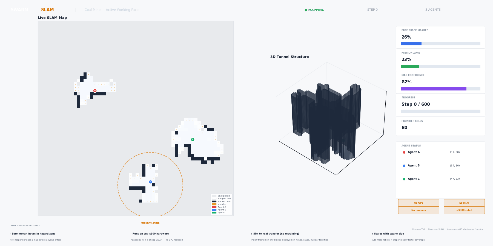

LIVE DEMO — SAME POLICY · TWO ENVIRONMENTS

COAL MINE — Organic tunnels & chambers

NUCLEAR FACILITY — Grid corridors & containment vessel

3-agent Mamba-PPO swarm autonomously builds maps of mines, nuclear facilities, and collapsed buildings — no GPS, no human operator, no retraining across environments.

Trained with information-gain shaped rewards. Selective state-space memory compresses the full trajectory — critical for 60m corridors where standard networks forget where they've been.
Per-cell log-odds posterior updated on every LiDAR ray. Collapses exponential observation history into a polynomial belief state. No pre-built map. Belief builds from nothing.
Mine tunnels and city blocks share the same exploration structure. Agarwal et al. show this yields polynomial real-world sample complexity. One checkpoint. Every environment.
| METRIC | RESULT |
|---|---|
| Free-space coverage — Coal Mine | 96.4% |
| Free-space coverage — Nuclear Facility | 97.1% |
| Steps to reach 90% coverage | ~120 steps |
| Hardware requirement | <$300 (Raspberry Pi 4 + LiDAR) |
| GPU required | None — CPU inference |
| Retraining across environments | Zero |
| Human entry required | Zero |